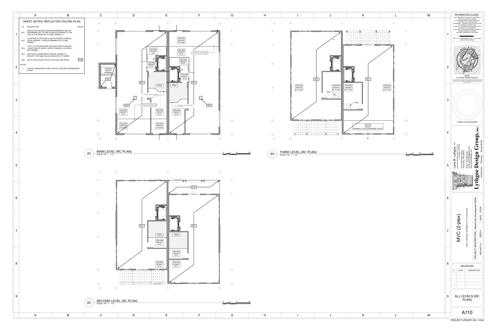
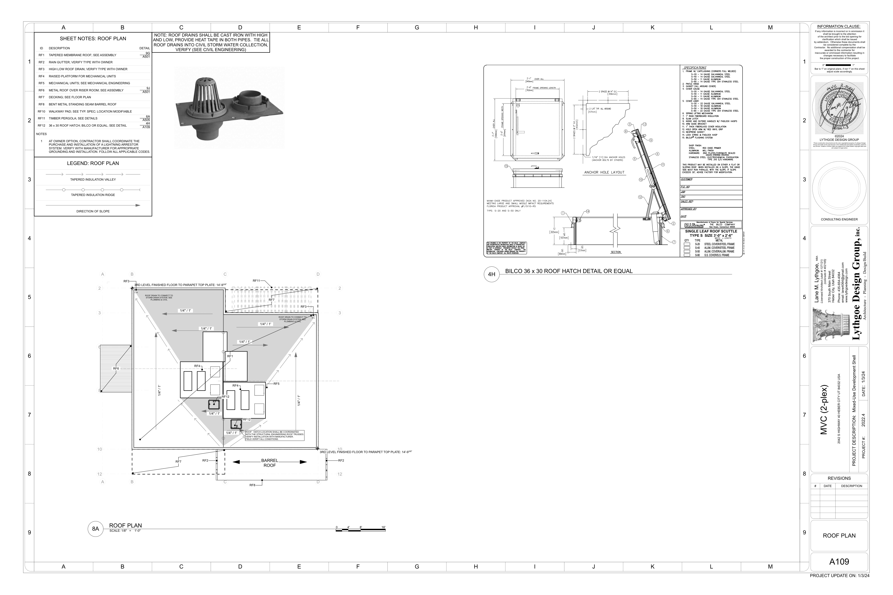
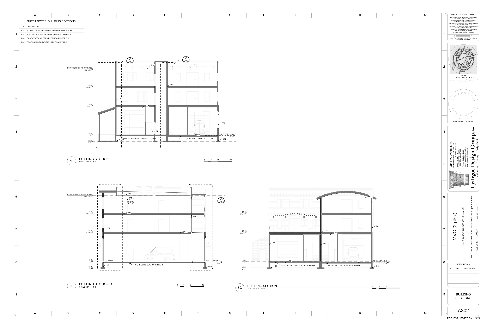
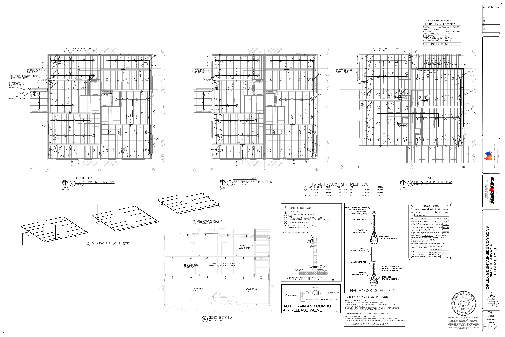

30′ × 8′A110 registered bay
38.5′ RS1.3 barrel radius
2 predictedfrozen source candidate
0 approvedactual FP2 answer
0% precisionfresh result




System-owned correction loop
Primary replayFrozen 2-target candidate versus approved zero-target bounded count.
Cross-source loopA107 must declare occupied/protected floor intersection before A109/A110 roof geometry can generate targets.
Adversarial loop15 sequence, score, count, receipt, and false-promotion mutations rejected.
Acceptance remains closed
This fresh holdout failed with two false positives. The next implementation must add source-declared occupied/protected-footprint intersection, preserve MVC as answer-exposed calibration only, and pass another untouched roof project.
freshProjectPlacementVerified=false · exactHeadElevationReady=false · obstructionClearanceReady=false · complianceReady=false · fieldReleaseReady=false